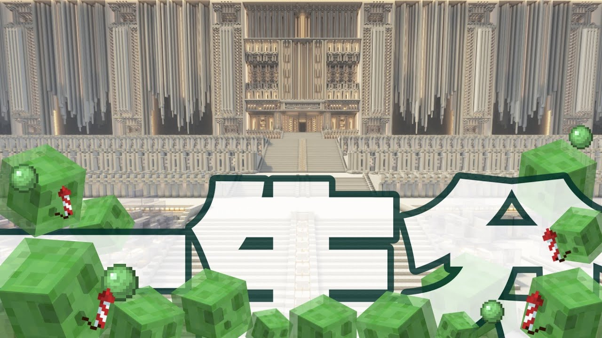
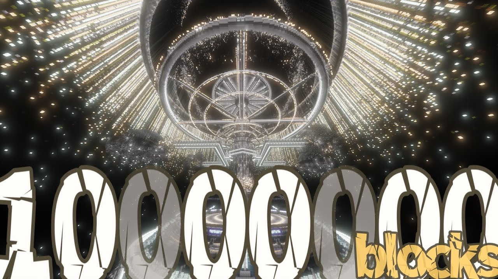
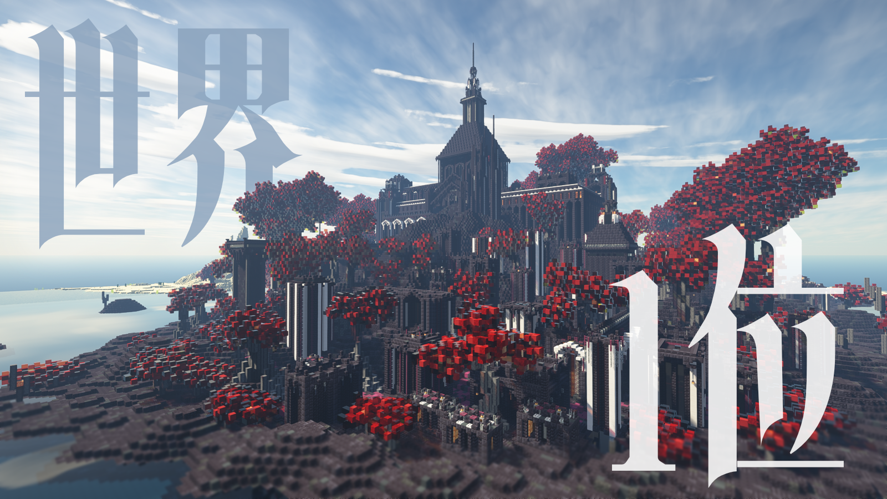
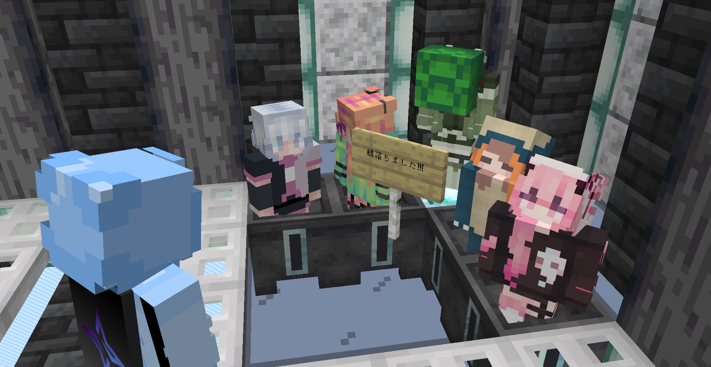
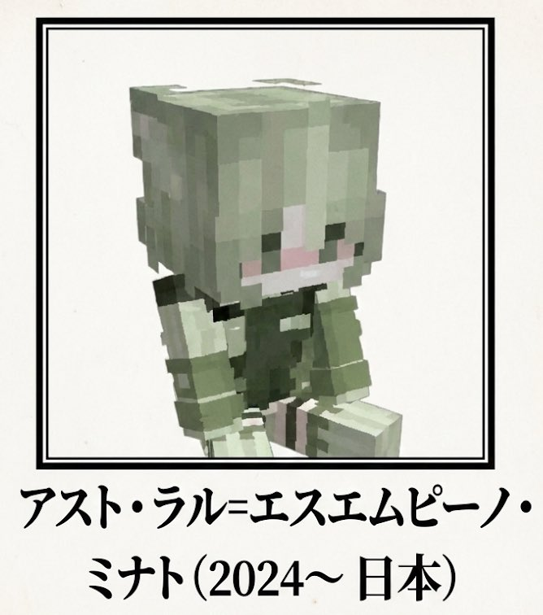

Server History
The chronicle of our journey across the stars.
2024.10.01
Project Start
Awesome-SMP（後のAstral-SMP）の始動。
2024.11.8

Spawn Periの完了
Spawn Chunkの範囲を露天掘り
2024.12.08
動画パート1が公開
YouTubeチャンネルにてパート1が公開されました。
2025.3.01
動画パート2が公開
YouTubeチャンネルにてパート2が公開されました。
2025.4.11
サーバー名を変更
サーバー名をAwesome-SMPからAstral-SMPへ変更
2025.7.01
動画パート3が公開
YouTubeチャンネルにてパート3が公開されました。
2025.8.15
鯖落ち
鯖落ち
2025.10.29

動画パート4が公開
YouTubeチャンネルにてパート4が公開されました。
2025.11.29
アスト・ラル＝エスエムピーノ・ミナト
鯖主
2025.12.17
test
test